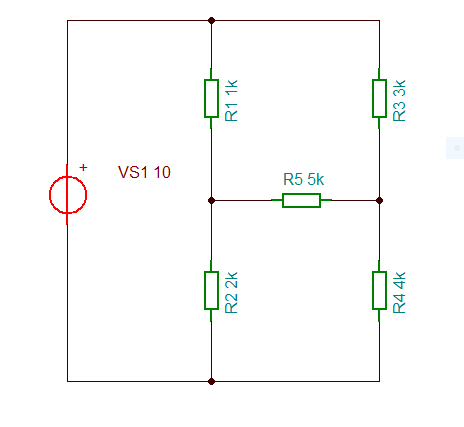
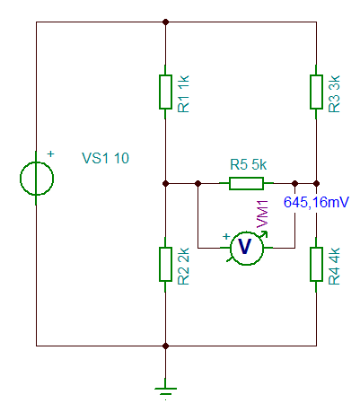
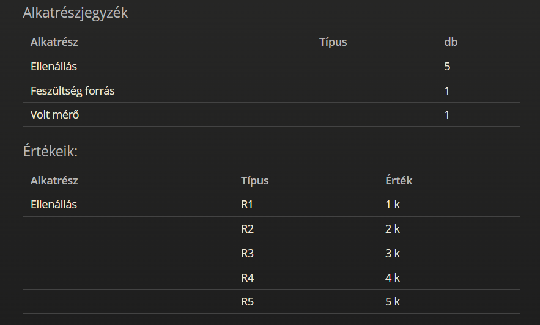
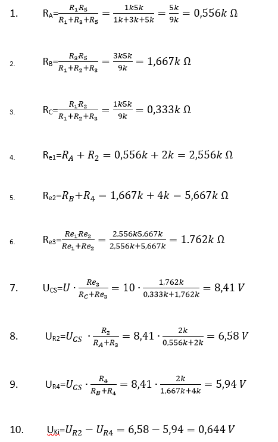

Projekt ismertetése:
Szimulációs méréssel (TINA)
Valós méréssel (Laborban)
Számítással (Delta/Csillag átalakitással)
Szimulációs mérés eredménye:


Szimulációs mérés eredménye:

Önreflexió:
A projekt elkészítése közben nagyon jól éreztem magam. Nehézséget nem igazán tapasztaltam benne, egyedül a TINA alkalmazás volt kicsit idegen számomra, de hamar eligazodtam rajta. A projekt sokat segített a képletek szakszerű alkalmazásának megértésében/használatában.
Izgatottan várom a kovetkező projektet.